Композиция и монтаж
Композиция организует пространство кадра, а монтаж связывает изображения во времени. В моушн-графике они работают вместе: положение формы готовит следующий стык, движение переводит внимание, а последовательность кадров меняет смысл даже знакомых объектов.
Мы будем смотреть на три вещи: что зритель замечает внутри кадра, какую связь понимает между кадрами и зачем выбран конкретный переход. Эффект может быть простым. Главное, чтобы он поддерживал идею и помогал читать работу.
Композиция · Основы монтажа · Приёмы и примеры · Переходы
Композиция: как строится кадр
Кадр как граница. Кадр показывает часть пространства и исключает всё остальное. Рамка определяет, насколько крупным кажется объект, сколько вокруг него воздуха и куда он может двигаться. В After Effects словом «композиция» также называют рабочую сцену проекта. Здесь нас интересует художественная организация изображения внутри этой сцены.
Начинайте с задачи: что нужно прочитать или заметить первым? В рекламной заставке это может быть продукт, в титре имя, в объясняющей графике действие или связь. Объекты, фон, текст, цвет и движение должны помогать этому порядку.
Баланс, сетка и свободное пространство
Баланс означает воспринимаемое равновесие частей. Симметрия даёт ясную ось и часто ощущение устойчивости; асимметрия позволяет выстроить более напряжённые отношения. Они выбираются под смысл. Центр кадра хорошо работает для знака, фронтального действия и точного совпадения, поэтому правило третей не стоит воспринимать как запрет на центральную композицию.
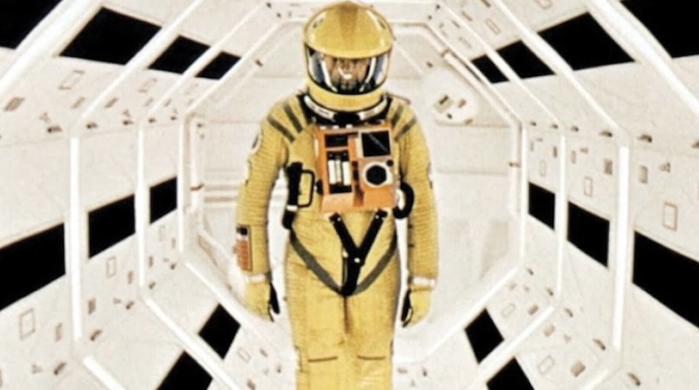
Фигура астронавта и перспектива коридора поддерживают одну центральную ось. Повтор деталей по сторонам делает отклонение от центра заметным. В графике такая организация помогает удерживать знак или центральное действие.
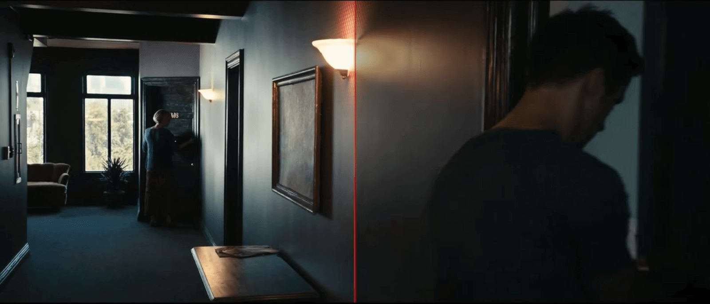
Здесь равновесие не создаётся зеркальным повтором. Тёмная крупная фигура справа сопоставлена с открытым пространством и меньшей фигурой слева. Ось разделения помогает увидеть отношения между областями. Сравнивайте массу, свет, свободное место и смысл частей, а не только расстояние до края.
Сетка помогает связать элементы общими линиями, интервалами и пропорциями. Деление на трети удобно как одна из отправных точек. Диагонали направляют взгляд, рамки внутри кадра выделяют область, а повтор форм создаёт ритм. Ни сетка, ни золотое сечение не гарантируют выразительности: оценивайте отношения реальных элементов.
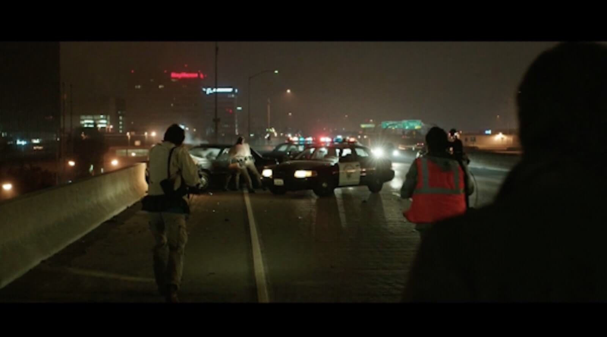
Продолжите глазами разметку дороги и края ограждения: они связывают ближнюю область с местом действия. Линия полезна, когда помогает найти важный объект. В моушн-графике так работают диагональ плоскости, повтор элементов, стрелка или направление движения. Проверьте, ведут ли они к нужному событию или уводят внимание за рамку.
Сетка в графическом макете. Сетка третей помогает искать положение акцентов, а модульная сетка организует несколько текстовых и графических блоков. У неё есть поля, колонки, горизонтальные деления и интервалы. Объект может занимать один модуль или несколько соседних. Общие края связывают элементы, а интервалы помогают отделить группы.
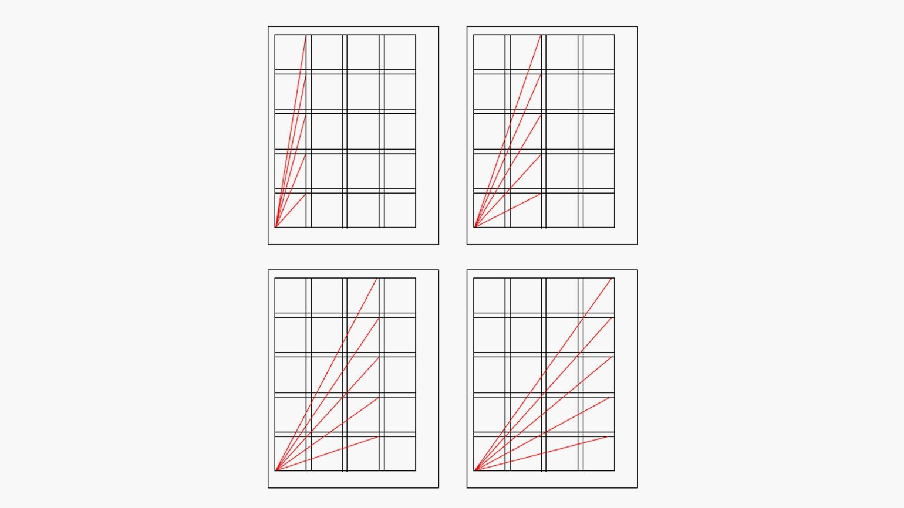
Проследите внешние поля, границы колонок и промежутки между ними. Красные диагонали показывают пропорциональные отношения, а не траектории движения. При переносе в моушн сетка может задавать место остановки заголовка, подписи и изображения, даже если их появление идёт с разных сторон.
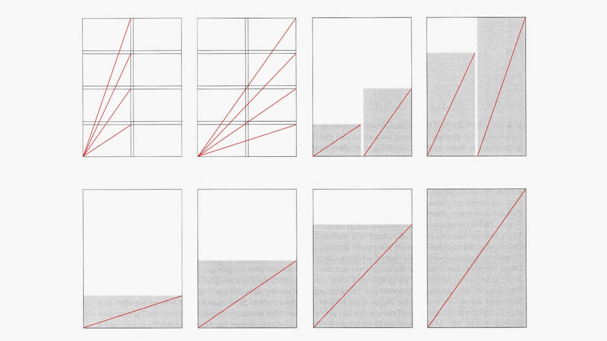
Прямоугольники могут занимать разное число модулей, оставаясь частью одной системы. Для анимированной инфографики это позволяет менять размер изображения или число карточек без случайного смещения всех подписей. Проектируйте прежде всего читаемое состояние, затем вход и выход. Во время движения объект может пересекать линии, но в момент чтения его положение должно быть осмысленным.
Негативное пространство является частью композиции. Оно отделяет знак от окружения, помогает прочитать текст и оставляет место для продолжения движения. Пустая область перед движущимся объектом может поддерживать ожидание пути; теснота у края может передавать давление или намеренную остановку.
Группировка тоже создаёт смысл: близкие элементы и одинаковые направления движения воспринимаются как связанные. Если все части движутся вместе, они могут читаться как один блок. Если одна меняет траекторию, она отделяется и становится самостоятельным участником действия.
Базовые построения композиции
Сетки помогают быстро попробовать несколько отношений внутри кадра. Сначала размещайте реальные формы и текст, затем смотрите, поддерживает ли выбранное построение их смысл. В моушне оценивайте также траекторию: объект может начать движение на одной линии и закончить на другой, а место для подписи нужно сохранить на всём участке чтения.
Правило третей. Две вертикальные и две горизонтальные линии делят рамку на девять равных частей. Вдоль линий удобно размещать горизонт, края крупных плоскостей и текстовые блоки; возле пересечений можно искать положение акцента. Это отправная точка, а не требование ставить каждый объект точно в узел. Для движущейся фигуры важно оставить пространство в направлении её движения.
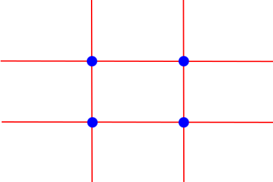
Золотое сечение. Большая и меньшая части относятся друг к другу примерно как 1,618 : 1. Линии такого деления проходят приблизительно на 38,2% и 61,8% ширины и высоты. Они ближе к центру, чем линии третей. Можно сравнить два расположения одного и того же объекта и выбрать то, где точнее работают интервалы и баланс. Золотая пропорция сама по себе не делает кадр лучше.
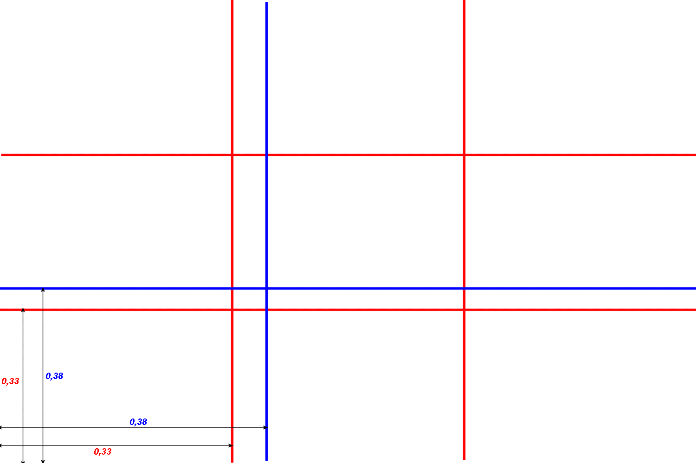
Диагональ и треугольное построение. Диагональ связывает противоположные области кадра и задаёт направление. В варианте «золотого треугольника» к основной диагонали проводят перпендикуляры из двух оставшихся углов. В опубликованном разборе картины ниже линии помогают проследить расположение фигур и напряжение между ними. Это способ анализа изображения; он не доказывает, что художник строил картину по такой сетке.
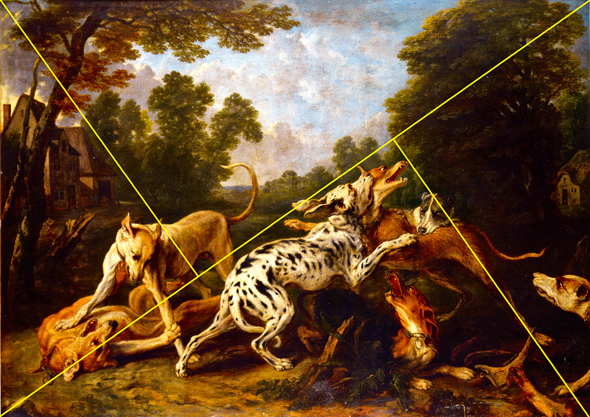
В графике диагональ может объединять знак, короткую надпись и второстепенные элементы; движение вдоль неё поддерживает общий вектор. Треугольная группа из трёх объектов помогает выстроить отношения «главное и поддержка»: широкий нижний уровень может восприниматься устойчиво, вершина создаёт акцент. Рамка внутри кадра выделяет важную область, а ведущие линии направляют к ней взгляд. Контуры букв, повторяющиеся плоскости и траектории частиц могут выполнять ту же роль, что архитектура или дорога в съёмочном кадре.
Сравните эти способы с центральной композицией в следующем примере. Где взгляд останавливается, а где движется по изображению? Для заставки логотипа точный центр может быть уместнее сетки третей. Для объясняющей графики асимметрия часто оставляет больше места под подпись. Выбор определяется тем, что нужно показать и в какой последовательности это должно читаться.
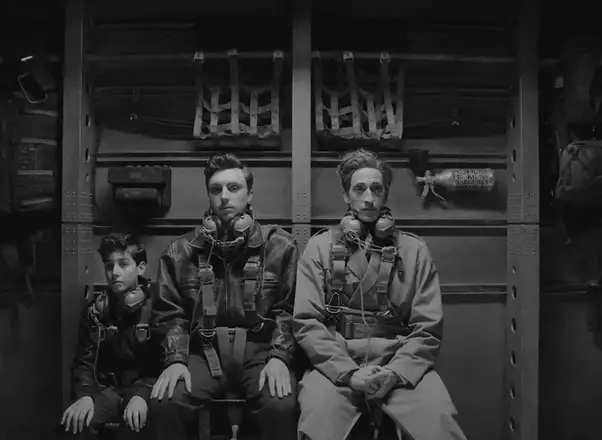
В этом фрагменте The French Dispatch фронтальная рамка, линии интерьера и расположение людей поддерживают устойчивую композицию. Посмотрите, как центральное построение помогает замечать небольшие действия. Как изменилось бы впечатление при диагональном ракурсе и неравных отступах?
Крупность, глубина и типографика
Общий план показывает пространство и отношения. Средний помогает наблюдать действие. Крупный выделяет объект или лицо, а деталь фокусирует внимание на небольшом признаке. В графике действует та же логика: сначала можно показать всю систему, затем увеличить узел, чтобы объяснить его поведение. Переход к детали должен добавлять информацию.
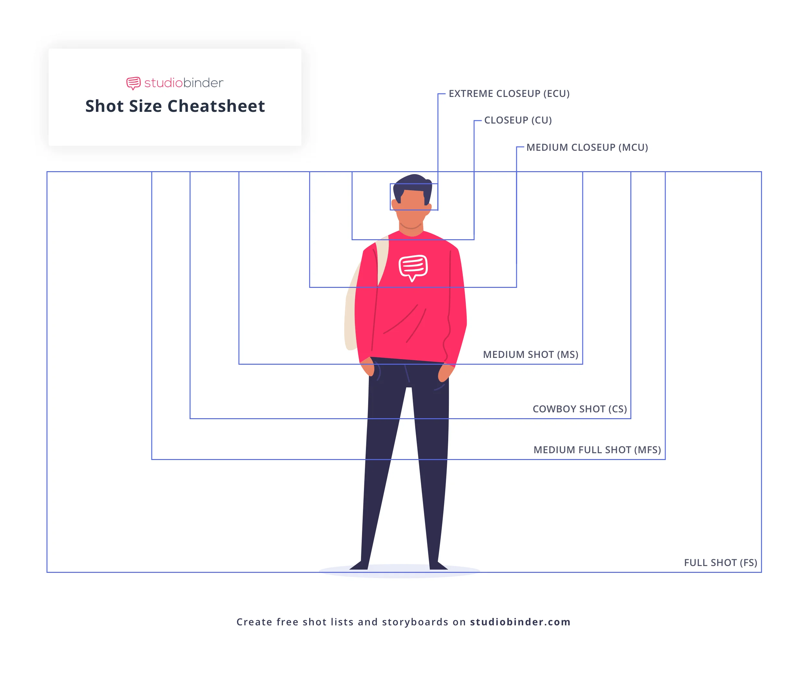
На шкале видно, какую часть фигуры оставляет каждая крупность: full shot показывает её целиком, medium shot приблизительно по пояс, close-up выделяет лицо, extreme close-up отдельную деталь. Более общий план добавляет окружение и отношения. В моушне вместо человека можно рассматривать систему, объект, узел и его признак; крупность выбирают под информацию, которую нужно раскрыть.
Глубину можно создать перекрытием, различием масштаба, перспективой, светом и движением слоёв. Передний план, середина и фон помогают направлять взгляд. Параллакс делает пространственные отношения заметнее, но не должен заставлять важный текст постоянно уезжать или перекрываться.
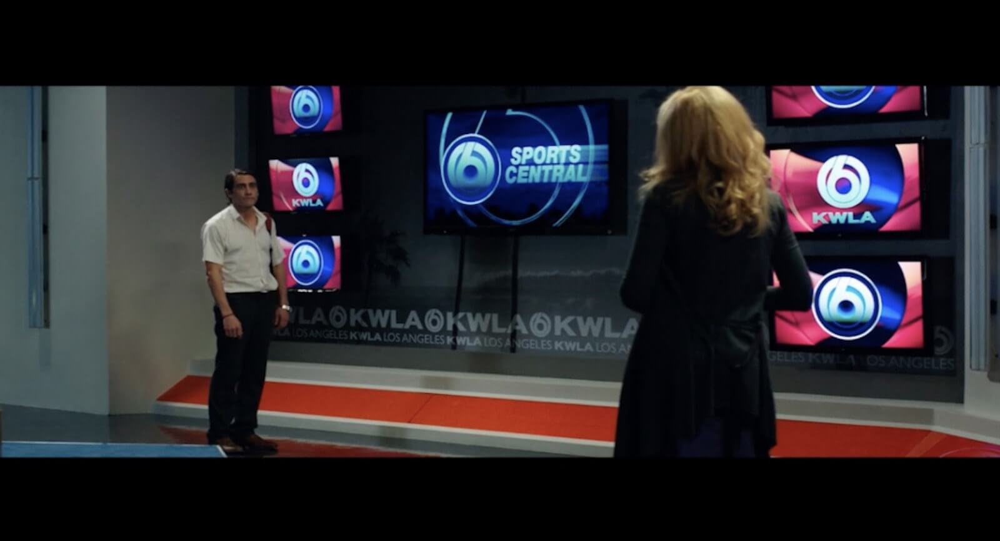
Ближняя фигура крупнее и частично перекрывает пространство; вторая находится дальше, а экраны образуют ещё один слой. Глубина возникает из совместной работы масштаба, перекрытия и перспективы. В моушне разные скорости смещения слоёв могут сделать эти отношения заметными во времени.
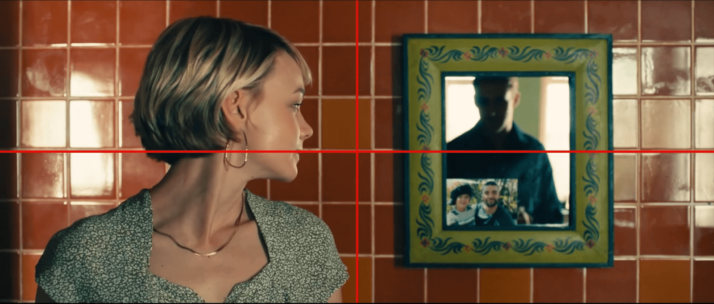
Рама вокруг отражения создаёт отдельную область, но взгляд героини связывает её с левой частью кадра. В графике роль такой рамки могут выполнять окно интерфейса, экран, буква или контур формы. Рамка выделяет область; направление взгляда или движения объясняет, как она связана с остальными элементами.
Типографика имеет форму и вес. Длина строки, интерлиньяж, насыщенность шрифта и интервалы влияют на общий силуэт. Проверяйте положение текста во время входа, чтения и выхода. Для титра недостаточно красивого стоп-кадра, если зритель получает читаемую надпись лишь на мгновение.
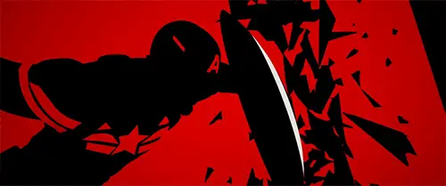
В титрах Captain America: The Winter Soldier буквы взаимодействуют с графическими плоскостями. Отметьте, какое состояние предназначено для чтения, а какое для перехода. Как движение поддерживает геометрию шрифта?
Композиция меняется во времени
Проверьте не только начальный и финальный кадры. В промежуточном состоянии объект может закрыть подпись, несколько элементов случайно слиться, а главный акцент переместиться раньше, чем зритель успел прочитать предыдущий. Временная иерархия определяет, кто ведёт внимание на каждом участке.
Соотносите движение с границами: куда объект входит, где останавливается и что остаётся за кадром? Направление может продолжиться после склейки. Тогда финальное положение первого изображения становится подготовкой второго.
Горизонтальный, вертикальный и квадратный форматы требуют собственной компоновки. Простое обрезание может уничтожить направление движения и связь текста с объектом. Для каждого формата уточняют масштаб, интервалы, траектории и места подписи. В публикации также учитывают интерфейс площадки, который может перекрывать края.
Разбор композиции поверх кадров фильмов
В этих видео линии и выделенные области накладывают на кадры, чтобы показать их устройство. Оба разбора на английском языке, но графическая разметка позволяет отдельно проследить расположение объектов. Останавливайте видео до появления линий, попробуйте определить ведущий элемент и направление, затем сравните с разбором.
StudioBinder показывает баланс, симметрию, свободное пространство, направляющие линии и глубину на примерах фильмов. Смотрите, что меняется между исходным кадром и его разметкой. Линии объясняют отношения, но не заменяют свет, цвет и содержание сцены. Для моушна попробуйте сформулировать тот же принцип через положение текста, формы и траекторию.
В разборе «Драйва» кадр делят на четыре области и сравнивают их наполнение. Это помогает увидеть отношения персонажей, связь фигуры и пространства, распределение информации. Такая разметка отличается от сетки третей: здесь важнее сопоставление половин и квадрантов. Для графики полезно проверить, где располагаются объект, причина действия, подпись и результат и как внимание переходит между ними.
Что даёт композиция ещё до начала движения? Какое отношение изменится, если поменять местами фигуру и свободную область? На следующем этапе оцените стык: остаётся ли понятным, куда смотреть после смены плана? Так композиционный разбор связывается с монтажом.
Монтаж: смысл между кадрами
Монтаж включает выбор материала, порядок, длительность планов, момент склейки и отношения изображения со звуком. Прямая склейка тоже является полноценным решением. Визуальный переход занимает участок времени вокруг стыка; монтажное решение определяет, зачем изображения оказались рядом.
Один и тот же набор кадров может рассказать разные истории. Если сначала показать падение предмета, затем реакцию, зритель может увидеть причину и следствие. Обратный порядок создаст ожидание или заставит иначе понять реакцию. Это рабочее предположение, которое проверяют просмотром.
Эффект Кулешова
В хрестоматийном описании опыта Кулешова один и тот же кадр с нейтральным лицом Ивана Мозжухина соединялся с разными изображениями. Зрители приписывали лицу разные состояния в зависимости от соседнего кадра. Основная мысль: смысл и эмоциональное прочтение могут возникать из сочетания изображений, а не только из содержания одного плана. Описание опыта есть на Культура.РФ.
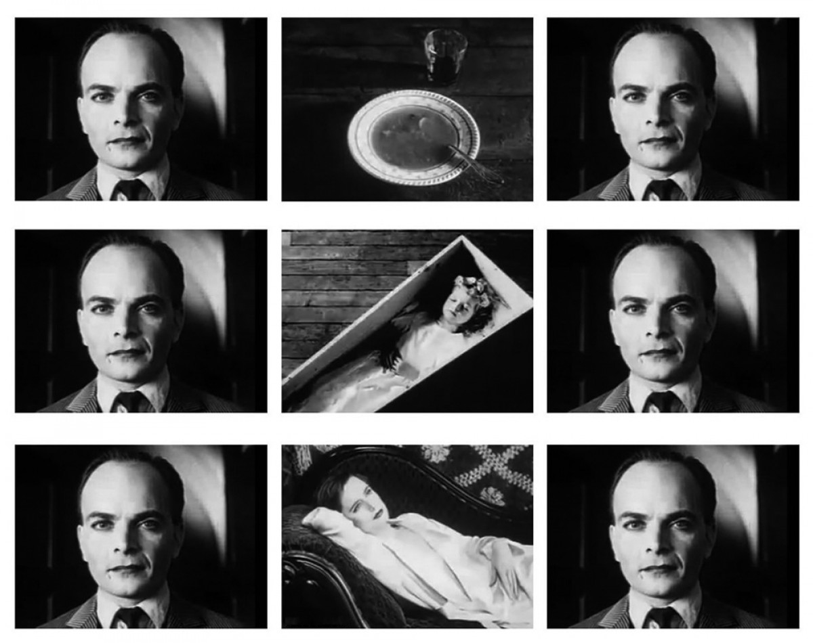
Читайте каждую строку слева направо: лицо, предмет или событие, снова лицо. В первой последовательности суп подсказывает голод, во второй изображение гроба задаёт контекст утраты, в третьей женщина на диване меняет эмоциональное прочтение. Сравнивайте именно повторяющееся лицо: выражение сохраняется, но соседний кадр предлагает другую причину взгляда. Здесь приведена опубликованная иллюстрация опыта, а не сохранившаяся плёнка первоначального эксперимента.
Это не обещание одинаковой реакции у всех зрителей. Контекст, длительность, предшествующее действие и опыт аудитории влияют на прочтение. В графике похожая связь возникает между знаком и следующим образом: круг рядом с планетой может читаться как орбита, рядом с циферблатом как время. Такие ассоциации нужно проверить, а не считать автоматическими.
Сопоставление может быть и метафорическим. Например, очередь людей и ряд одинаковых деталей вместе позволяют говорить о стандартизации. Эта логика связана с традицией смыслового монтажа; у Эйзенштейна последовательность изображений становится способом выразить идею. Исторический контекст: монтаж аттракционов. Это не означает, что любые две картинки обязательно дадут задуманный смысл.
Непрерывность, время и пространство
Непрерывный монтаж помогает воспринимать отдельные планы как понятное действие. Для этого согласуют направление, фазу движения, положение объекта, взгляд, освещение и существенные детали. При смене крупности зритель должен понимать, какой объект он рассматривает и где тот находится.
Ось взаимодействия представляет собой воображаемую линию между участниками или вдоль основного действия. Камеры с одной стороны оси обычно сохраняют экранные отношения «лево / право». Это правило 180 градусов. Пересечение оси возможно, но требует осмысленного решения: непрерывного перемещения, общего плана, нейтрального ракурса или намеренной дезориентации.
В абстрактном моушне аналогичная задача связана с направлением движения. Если элемент шёл вправо и после склейки неожиданно пошёл влево, это может читаться как разворот. Решите, хотели ли вы показать разворот или случайно потеряли продолжение движения.
Эллипсис пропускает часть времени. Нам не обязательно показывать весь процесс, если его этапы и результат понятны. Параллельный монтаж чередует линии действия и позволяет сопоставлять их, часто создавая ощущение одновременности. Ассоциативный монтаж связывает изображения через мысль, образ или контраст. Эти способы могут сочетаться.
Ритм и звук
Ритм возникает из соотношения длительностей, движения внутри планов, пауз и акцентов. Частые склейки повышают плотность событий, но сами по себе не делают монтаж выразительным. Иногда важнее задержаться на результате, чем добавить следующий план.
Музыка может поддерживать ритм, а звук связывать пространство и действие. Склейка на ударе является одним из вариантов. Значимый акцент можно задержать или перенести, чтобы он выражал мысль. Пауза в изображении и пауза в звуке также могут действовать вместе или в разное время.
J-cut: звук следующего плана начинается раньше смены изображения. L-cut: звук предыдущего плана продолжается после смены изображения. Для моушн-графики это способ заранее ввести событие или провести дикторскую фразу через несколько визуальных состояний.
Гифка не содержит звук. По ней можно разобрать визуальный стык и ритм, но нельзя доказать наличие J-cut, L-cut или синхронизации с музыкой. Для такого разбора нужно открыть оригинальный ролик со звуком. Это полезное ограничение формата: оно помогает отдельно оценить изображение.
Приёмы: что связывает кадры
Дальше собрана подборка визуальных решений из кино, рекламы и анимации. Один фрагмент может одновременно использовать несколько приёмов. Названия Eyecandy помогают искать референсы, но не являются единственной академической классификацией. Рядом с каждым примером смотрим на конкретную связь.
В части примеров меняются планы, в других пространство преобразуется непрерывно. Для моушн-дизайна полезны оба подхода: монтажная логика может выражаться склейкой, перекрытием или перестройкой одного изображения.
Match cut: склейка по сходству
Кадры связываются заметным общим признаком: формой, положением, цветом, движением или композицией. Сходство может соединять очень разные места и времена. Для графики это способ превратить круг в планету, окно в экран или линию в букву через точный стык.
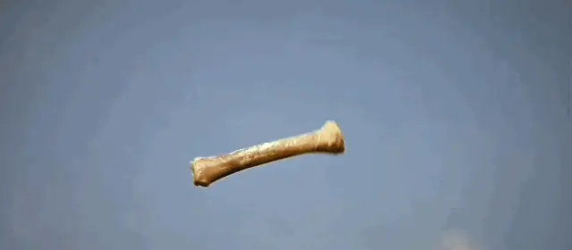
В 2001: A Space Odyssey Стэнли Кубрика летящая кость сменяется объектом в космосе. Похожая форма поддерживает стык, а огромный скачок времени добавляет смысл. Сходство не требует пиксельного совпадения. Какую роль играет положение вытянутого объекта перед склейкой?
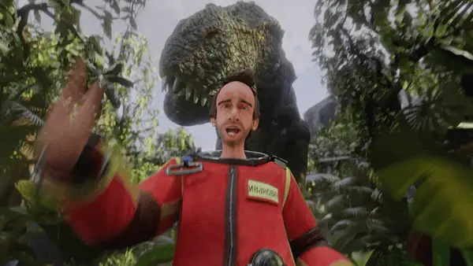
В рекламе Apple Arcade сходное положение героя связывает фантастическую сцену с интерьером. Следите за центром действия и направлением жеста. Для графики можно сначала совместить ведущие формы, затем выбрать момент смены материала или пространства.
У этого приёма несколько опор: контур, размер, положение, цвет, направление или смысл. Графический match cut может превратить круг в глаз, колесо или букву «О» без промежуточной анимации. Ассоциативный вариант сопоставляет разные по форме вещи через идею. В стыке кости и космического аппарата соединяются визуальная форма и мысль об орудии; в рекламной графике похожим способом можно связать деталь продукта с его функцией. Выберите один ведущий признак и удержите его по обе стороны стыка.
Match motion: связь через движение
Движение одного плана подхватывается другим: сохраняются направление, фаза или характер жеста. В непрерывном действии склейка по движению показывает тот же жест с другого ракурса. В творческом монтаже сходные жесты могут связывать разные действия и людей.
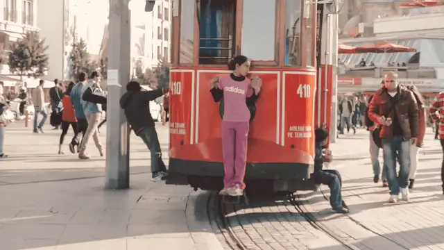
В Watchtower of Turkey жесты связывают разные ситуации. Сравните положение руки до и после склейки. В графике вращение диска может продолжиться вращением буквы; важно согласовать фазу, направление и воспринимаемую скорость.
Варианты для графики: уход одного объекта подхватывает вход другого; вращение диска продолжается вращением знака; падающая точка становится падающей буквой. Согласуйте не только направление, но и скорость возле стыка. Отдельный близкий приём, match on action, продолжает одно и то же действие с другого ракурса: например, жест начинается в общем плане и завершается в крупном. Match motion может связывать разные действия и разные объекты.
Jump cut: заметный скачок
Часть непрерывного действия вырезается, а похожая рамка сохраняется. Объект как будто перескакивает в другое положение. Приём сжимает время, подчёркивает повтор или делает движение намеренно прерывистым.
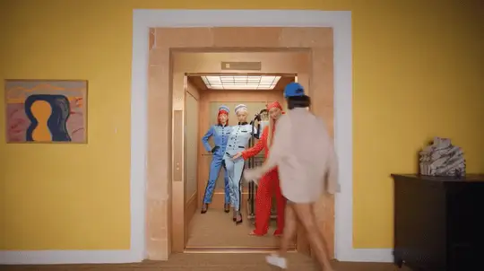
В H&M: Hotel Hennes повторяющийся проход и рамка двери делают скачки заметными. В моушне можно пропускать промежуточные состояния формы или менять слово в фиксированной позиции. Определите, что остаётся постоянным, а что меняется скачком.
Варианты: убрать середину действия, оставить несколько этапов сборки, показать один объект в меняющихся состояниях из почти одинаковой точки. Повторяющаяся рамка делает разницу заметной. В моушне это может быть ступенчатое заполнение шкалы или смена поз фигуры. Если пропуск неочевиден, зритель может принять скачок за ошибку: помогите ему повтором, ритмом или намеренно крупным различием состояний.
Cut-in: переход к детали
После более общего изображения показывается его часть крупнее. Деталь должна раскрывать информацию: жест, свойство материала, надпись или важное действие. Это не всегда простое цифровое увеличение исходного кадра.
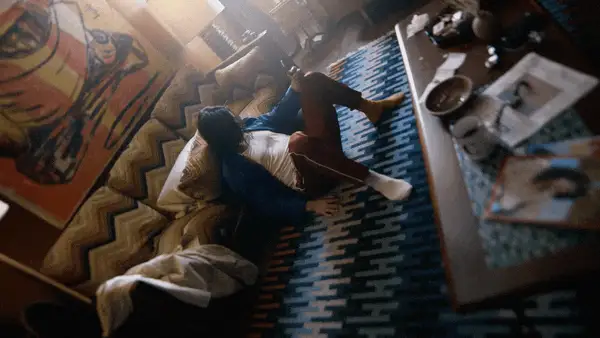
В Chime: Woah масштаб внимания меняется от ситуации к человеку. Для объясняющей графики аналогом будет переход от всей схемы к одному узлу. Крупный план должен помогать понять новую связь, а не только увеличивать изображение.
Дополнить разбор можно парой «деталь и обратный выход»: после увеличения показать весь объект и связь детали с системой. Другой вариант, insert, выделяет предмет или информацию, важную для действия, например кнопку, цифру или индикатор. Cutaway на время переводит взгляд на другое связанное изображение и затем возвращает к основной линии. В объясняющем ролике такими вставками удобно показывать причину, реакцию и результат.
Quick cuts: плотная последовательность
Короткие планы собираются в энергичный ряд. Порядок, длина и различие планов определяют ритм. В графике такой ряд может быстро показать набор функций или состояний, если важные признаки успевают считываться.
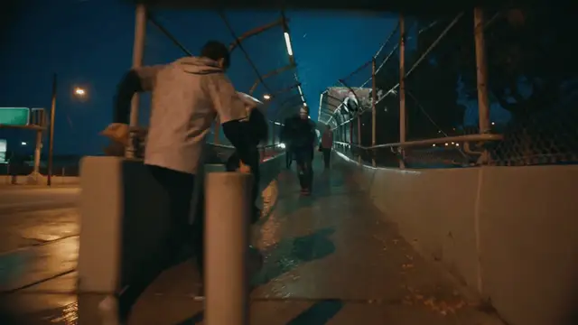
В adidas: Imagination короткие фрагменты действия создают плотность. Проследите, где повторяются направления и где меняется крупность. Для графики полезно чередовать общую форму, действие и деталь, а после серии оставить результат для восприятия.
Попробуйте три организации ряда: одинаковая длительность создаёт пульс; постепенное сокращение планов ускоряет развитие; длинная пауза после коротких планов выделяет результат. Повтор положения и формы облегчает считывание плотного ряда. Можно чередовать общий план, деталь и титр, но подписи с новой информацией требуют отдельного времени чтения.
Whip pan: переход через быстрый разворот
Быстрое панорамирование размывает изображение. Другой план может подхватить направление, и стык прячется в зоне быстрого движения. Важно связать начало и завершение разворота, а не просто добавить размытие.
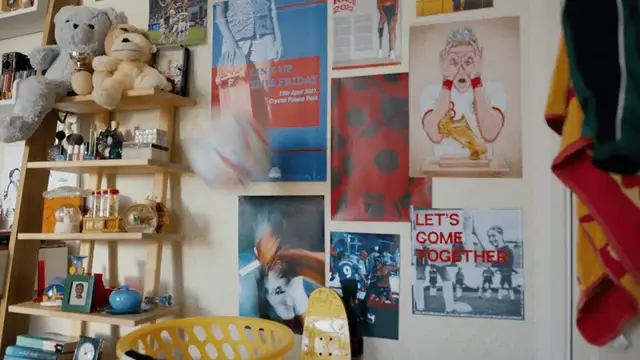
В Sports Direct: Women’s Euro быстрый перевод ведёт нас от одной части комнаты к другой. Панорамирование само по себе не доказывает наличие склейки. В графике можно перевести виртуальную камеру или целый слой, сохранив направление и характер остановки.
Приём можно сочетать с перекрытием: в момент максимального движения передний план закрывает рамку, а после смены открывает новую сцену. В графике близкий вариант, whip slide, быстро сдвигает плоскости без поворота камеры. Следите, чтобы выход и вход поддерживали один вектор; характер замедления в новой сцене определяет, почувствует ли зритель продолжение или резкий удар.
Резкое изменение крупности: crash zoom
Быстрое приближение или удаление создаёт ударный акцент. Оно может происходить в одном плане или соединять изображения через сходный масштаб и движение. На Eyecandy такие решения встречаются в категории Crash cut.
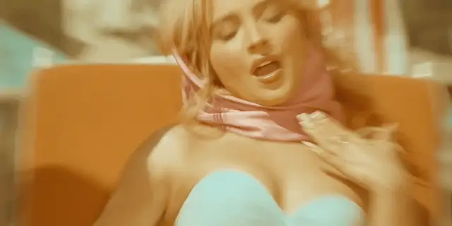
В Sabrina Carpenter: Espresso резкое укрупнение и возврат выделяют лицо в группе. Для графики аналогом станет быстрый вход в деталь знака с выходом к целому. Акцент должен приходиться на важное событие; постоянное повторение ослабит его.
Zoom-in может переносить внутрь объекта, zoom-out раскрывать его окружение, а пара «вход и выход» соединять два разных пространства. Удерживайте выбранную точку внимания: если знак перед стыком находится слева, а после оказывается справа, зрителю придётся искать его заново. В графике быстрый масштаб можно сочетать с кратким размытием, но читаемое конечное состояние должно оставаться устойчивым.
Masking: монтаж через перекрытие
Одно изображение закрывается формой, а за ней появляется другое. Граница маски может совпадать с силуэтом, предметом или графической плоскостью. Wipe открывает кадр движущейся границей; перекрытие объектом может сделать переход менее заметным.
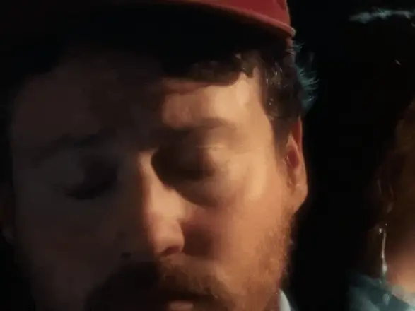
В Metronomy & Katy J Pearson: Love Factory крупные лица и перекрытия организуют смену видимого пространства. В графике ту же функцию может выполнять буква или движущаяся фигура. Смотрите, как край формы связан с открываемым изображением.
Варианты маски: прямой край плоскости, круговое раскрытие, силуэт объекта, контур буквы или несколько полос. Object wipe использует предмет переднего плана, который закрывает кадр; graphic wipe делает то же графической формой. Выбирайте границу, связанную с визуальным языком работы. Если переход идёт через букву, её характерная форма может одновременно работать как часть айдентики.
Pass through: проход через объект
Камера проходит через отверстие, рамку или плотное перекрытие. Это даёт возможность соединить пространства и изменить масштаб. Сам проход может быть непрерывным, а склейка скрываться в зоне перекрытия.
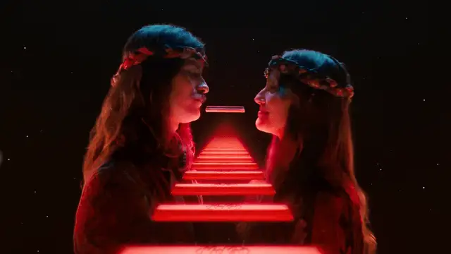
В KITKAT: Break Épico движение камеры проводит через близкую к ней форму и меняет точку наблюдения. Для графики можно войти в просвет буквы и оказаться в следующей сцене. Подготовьте понятное направление движения до и после прохода.
Проход можно подготовить рамкой, дверью, экраном или просветом буквы. Сквозной проезд и переход через полное перекрытие дают разное ощущение: в первом важна непрерывность пространства, во втором можно скрыть смену сцены. В графике согласуйте масштаб отверстия, направление движения и точку выхода, чтобы следующий кадр воспринимался как продолжение пути.
Set transition: смена пространства в непрерывном движении
Декорация или окружение перестраиваются на глазах. Действие остаётся ведущей связью, хотя сцена уже другая. Приём подходит для преобразования среды и переходов между визуальными мирами.
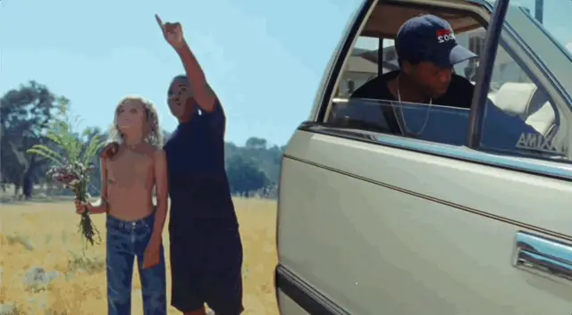
В A$AP Rocky: Kids Turned Out Fine движение вдоль автомобиля связывает разные группы и окружение. Для графики аналогом будет превращение стены в страницу или смена фона за объектом. Зрителю нужна опора, по которой он узнает продолжение.
Возможны подмена фона за неизменным объектом, разворот плоскости с новым изображением на обороте, преобразование пола и стен или смена сезона вокруг героя. Постоянный ориентир помогает прочитать изменение среды. Для продуктового ролика это может быть один предмет в разных ситуациях использования, для абстрактной графики один знак в меняющихся материалах.
Split screen: несколько изображений в одной рамке
Экран делится на области. Они позволяют одновременно наблюдать действия, сравнивать объекты или соединять внутреннее и внешнее пространство. Разделённый экран сам по себе не означает, что события происходят одновременно.
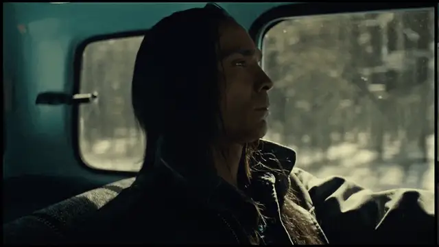
В Fargo разделение сопоставляет человека в машине и фигуру в открытом пространстве. В графике можно сравнить два процесса или показать ввод и результат. Решите, должны ли области конкурировать или одна вести внимание.
Разделение бывает равным, иерархическим или подвижным. В варианте «до и после» одинаковый масштаб облегчает сравнение; в варианте «действие и реакция» внимание можно передавать между областями. Граница тоже может участвовать в переходе: одна область расширяется на весь экран, а другая сжимается. Проверяйте размеры текста и важные детали уже внутри уменьшенной области.
Match split: совпадение на границе частей
Разные изображения совмещаются так, чтобы силуэт или линия продолжались через границу. Приём требует согласования положения, масштаба и направления. Получается составной образ, который одновременно показывает различие и общность.
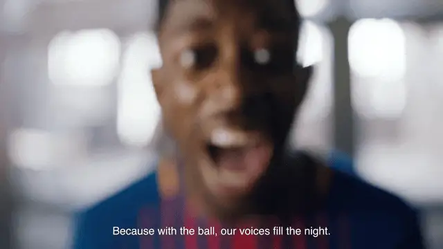
В Nike: The Ball Makes Us More фрагменты лиц и других образов складываются в общий рисунок. Для графики так можно соединить разные материалы или собрать знак из нескольких сцен. Какие линии удерживают образ целым?
Сопоставлять можно лица, руки, силуэты, линии горизонта и даже строки текста. Подвижная граница позволяет постепенно менять долю каждого изображения. В графике одна половина знака может быть плоской, другая объёмной, но общий контур и фаза движения удержат их вместе. Несовпадение также можно использовать намеренно, если задача состоит в контрасте или разрыве.
Морфинг: превращение формы
Один образ постепенно преобразуется в другой. Поскольку промежуточные состояния видны, это отличается от прямой склейки по сходству. Морфинг может связать сцены, но также работать внутри одного плана.
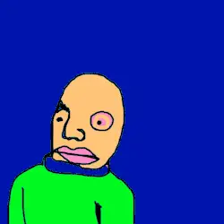
В анимации Dan Norman признаки лица переходят в другую форму. Для моушна полезно заранее определить общие точки и контуры: какой элемент станет опорой превращения и когда новый образ начнёт узнаваться?
Варианты: трансформация силуэта, превращение одного материала в другой, переход между иконками или буквами. Выберите несколько опорных точек и решите, какие признаки исчезают первыми. Круг может вытянуться в каплю и затем стать знаком воды. Короткая пауза до и после превращения помогает увидеть исходный и новый образы; сам наплыв без изменения геометрии морфингом не становится.
Scale shift: перемена отношений масштаба
Необычное соотношение размеров меняет наше понимание пространства. Это может быть склейка между масштабами, движение камеры или изменение самого объекта. Не всякое увеличение слоя является смысловым переходом.
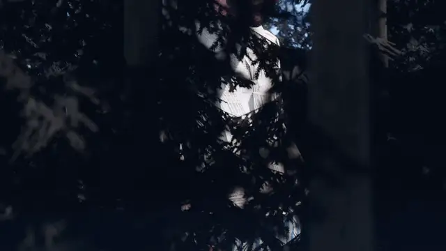
В AJR: Maybe Man человек оказывается гигантским относительно леса. В графике небольшая точка может стать целым миром. Сначала задайте известный размер или ориентир, чтобы изменение соотношения было заметным.
Приём сочетается с раскрытием контекста: сначала зритель видит абстрактную поверхность, затем камера отъезжает и показывает, что это часть большого предмета. Другой вариант превращает маленький объект в пространство для следующей сцены. В инфографике такой переход связывает общий обзор и уровень деталей, если подписаны масштаб и положение рассматриваемой области.
Freeze frame: остановка как акцент
Движение замораживается на выбранном кадре. Остановка выделяет жест, превращает действие в изображение или создаёт место для надписи. Нужен кадр, в котором действие ясно читается.
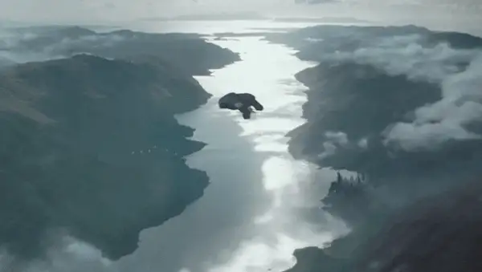
В Harry Potter and the Prisoner of Azkaban финальная остановка фиксирует выразительное лицо. В графике можно удержать результат действия и добавить короткий титр. Отличайте осмысленный стоп от случайной неподвижности.
Можно заморозить весь кадр, оставить неподвижным только объект или вынести его из остановленной сцены в графическую композицию. Стоп сочетается с обводкой, подписью, коллажем и последующим продолжением движения. Выбирайте момент, где силуэт и жест уже читаются, и оставляйте достаточно времени для новой информации.
Speed ramp: переменная скорость
Скорость воспроизведения меняется внутри фрагмента. Ускорение может провести через промежуточное действие, замедление выделить момент. Изменение скорости не обязательно совпадает со склейкой.
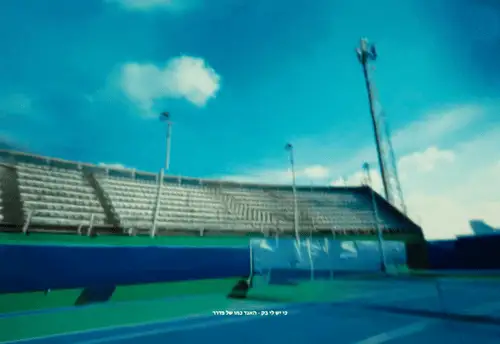
В Static: Federer меняется темп движения исполнителя и камеры. В графике похожую драматургическую функцию могут выполнять разные длительности фаз анимации. Сам приём ретайминга оценивайте по движению исходного материала, а не только по частоте смены кадров.
Ускорение удобно вести к стыку, а замедление после него раскрывает важное действие. Такой переход можно сочетать с match motion или быстрым переводом камеры. В съёмочном материале проверяйте, хватает ли исходных кадров для замедления; в созданной анимации можно заранее спроектировать скорость и фазу. Музыкальный удар помогает выделить момент, но связь движения должна читаться и без него.
Flash cut: очень короткое изображение
Короткие вставки создают пульсацию, ассоциацию или быстрый зрительный акцент. Это изображение, которое появляется ненадолго, а не обязательно белая вспышка. Частый ритмический ряд может быть построен на совпадающих формах.
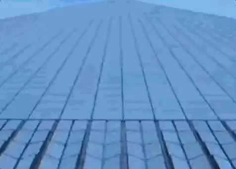
В Typologies of New York City: A Crowdsourced Hyperlapse архитектурные изображения быстро сменяются и сохраняют визуальные ориентиры. Для графики можно показать короткий ряд вариаций знака. Важная информация требует достаточного времени чтения.
Короткая вставка может возвращаться как мотив, прерывать последовательность контрастным образом или входить в быстрый ряд одинаковых форм. В типографике это вариант смены коротких слов с общей осью. Текст, который нужно понять с первого просмотра, не стоит превращать в мимолётную вставку. Частая пульсация быстро утомляет: дозируйте её и избегайте длительного ряда резких контрастных вспышек.
Light flash: свет как место перехода
Вспышка, засветка или резкое изменение яркости могут перекрыть детали и соединить изображения. Свет также может быть самостоятельным акцентом внутри плана. Его функция определяется связью с действием.
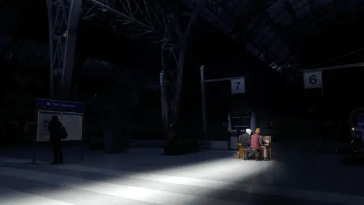
В Canon: Live for the Story яркие световые акценты связывают наблюдаемые моменты. В графике переход через свет лучше подготовить движением, материалом или событием. Вспышка не заменяет понятную причину смены изображения.
Возможные варианты: засветка от источника в кадре, световая полоса, блик на продукте или выход через белое поле. Разница с flash cut в том, что связующим событием становится свет, а не короткая вставка отдельного изображения. В графике блик можно провести по материалу и в момент перекрытия сменить сцену. Интенсивность должна соответствовать стилю и не уничтожать читаемость всего эпизода.
Color shift: изменение цветового режима
Переход между чёрно-белым и цветным изображением либо между палитрами может обозначать смену состояния, времени или точки зрения. Универсального значения у такой смены нет: его создаёт контекст.
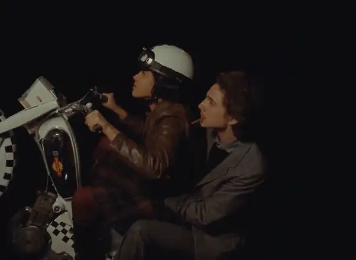
В The French Dispatch цветовой режим становится частью визуального рассказа. В графике можно связать палитру с этапами объяснения. Проверьте, сохраняется ли различимость главного объекта и не приходится ли зрителю заново искать его после изменения цвета.
Смена палитры может быть мгновенной, постепенной или проходить волной через маску. Она сочетается с изменением материала и состояния объекта: неактивное становится активным, схема превращается в визуализацию, воспоминание уступает текущему моменту. Для смыслового изменения полезно поддержать цвет ещё одним признаком, например формой, подписью или действием.
Коллаж: монтаж внутри изображения
Вырезанные фрагменты, разные фактуры и масштабы одновременно образуют новый кадр. Это пространственное сопоставление, которое может сочетаться с обычными склейками. Общая ось, повтор или силуэт помогают связать разнородные части.
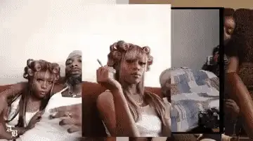
В Axe: Monday фрагменты изображений располагаются в нескольких планах и меняют отношения. В моушне коллаж позволяет соединить фотографию, типографику и нарисованные формы. Даже насыщенному кадру нужен понятный порядок внимания.
Дополнительные приёмы: смена фрагмента при сохранении общего силуэта, ступенчатое появление вырезок, параллакс между планами и переход через бумажную плоскость. Различие фактур может стать частью смысла, например соединить документ, фотографию и схему. Повтор оси, цвета или масштаба помогает сделать кадр цельным. Движение одного фрагмента может передавать внимание следующему.
Бесшовный цикл: финал становится началом
Последнее состояние соединяется с первым без заметного скачка или через намеренный повтор. Согласуют положение, фазу, направление и скорость. Для цикла со звуком проверяют и звуковой стык.
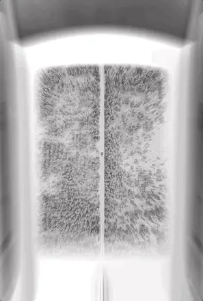
В анимации Cole Quigley движение масштаба возвращает к знакомому состоянию. Для графики цикл может выразить непрерывный процесс или повторяющееся действие. Если работа зациклена, важно, как меняется впечатление после нескольких повторов.
Цикл можно собрать через возвращение к исходной позе, повторяющуюся геометрию, перекрытие кадра или проход камеры в узнаваемую рамку. Совпадения первого и последнего изображения недостаточно, если на границе заметно меняется скорость. Проверяйте цикл несколькими повторами: направление, свет, движение фона и звуковой стык должны поддерживать непрерывность.
Прямая склейка, наплыв и уход в затемнение
Прямая склейка мгновенно меняет изображение. Наплыв постепенно смешивает конец одного плана с началом другого. Fade вводит изображение из однотонного поля или выводит в него. Эти простые решения нужны так же часто, как сложные переходы.
Наплыв может подчеркнуть течение времени, память или мягкое сопоставление, но иногда делает образ менее ясным из-за наложения деталей. Затемнение может разделить эпизоды или завершить мысль. Резкая контрастная склейка, которую часто называют smash cut, использует неожиданное различие соседних планов. Её воздействие может зависеть и от звука.
Переходы в моушн-графике
Переход связывает два состояния изображения. Он может продолжать движение, менять место и масштаб, обозначать новый раздел или превращать один образ в другой. Перед выбором эффекта определите, что должно остаться общим и что зритель должен заметить после смены. Если важен сам контраст, его может лучше показать прямая склейка.
У перехода есть подготовка, участок смены и завершение. Сначала зритель получает направление или ожидание, затем изображение меняется, после чего новый кадр становится понятным. Пауза для чтения относится к новой сцене: движение перехода не должно съедать всё время титра. Начальный и конечный кадры стоит проверить отдельно, промежуточные состояния в движении.
| Способ | Как меняется изображение | Когда помогает |
|---|---|---|
| Вытеснение: wipe | Движущаяся граница открывает новый кадр | Новый раздел, смена графической плоскости, движение по заданной оси |
| Сдвиг: slide / push | Новая сцена въезжает; при push предыдущая одновременно уходит | Последовательные страницы, карточки, развитие в одном направлении |
| Раскрытие через маску: reveal | Круг, буква или силуэт постепенно становятся окном в новую сцену | Связь с формой знака, предмета или элемента айдентики |
| Приближение и вращение | Масштаб или поворот переводят к другому изображению | Вход в деталь, перемена уровня, энергичный акцент |
| Размытие: blur | Детали уходят в размытие, затем появляется резкое новое изображение | Смена фокуса или поддержка быстрого движения |
| Деформация: warp / displacement | Изображение растягивается или искажается перед сменой | Текучий материал, волна, связь со свойствами объекта |
| Переход по яркости: luma wipe | Области раскрываются в порядке, заданном светлыми и тёмными участками подложки | Текстурное появление, проявление через дым, зерно или другую фактуру |
| Глитч: glitch | Краткие сдвиги, разрывы и нарушения изображения скрывают смену | Сбой, вмешательство, цифровая среда, если это поддерживает тему |
Сочетание приёмов. Вытеснение может идти по диагонали композиции, zoom переходить через совпадающий круг, а blur поддерживать whip pan. Морфинг можно завершить паузой и прямой склейкой к новому масштабу. Начните с одной ясной связи и добавляйте другие средства, когда они помогают её прочитать. Приём не обязан выглядеть одинаково на каждом стыке, но характер движения должен оставаться частью общего визуального языка.
Скрытая и заметная смена. Для скрытого стыка подходят полное перекрытие, быстрое движение, одинаковая форма или непрерывный жест. Заметный переход, наоборот, может обозначить границу раздела или важную перемену. Один и тот же круговой reveal бывает спокойным раскрытием информации и энергичным ударом, если изменить длительность, ускорение, масштаб и звук.
Как собрать переход в After Effects
Разместите две сцены на таймлайне и определите момент смены. Для наплыва или перехода с одновременным движением обе сцены должны быть доступны на всём нужном участке: у видеоматериала оставьте запас кадров по краям. Сложные сцены удобно предварительно собрать в отдельные композиции. Затем анимируйте выбранную связь: Position и Scale для сдвига и масштаба, Opacity для наплыва, контур маски или подложку для раскрытия.
Например, для кругового reveal новый кадр можно открыть расширяющимся кругом, используя его как альфа-подложку. Для luma wipe порядок раскрытия задаётся яркостью подложки. Об этих инструментах есть русскоязычная справка Adobe по маскам и подложкам. Проверьте, полностью ли открывается новая сцена и не остаётся ли случайной полосы по краям.
Настройте скорость и остановку, посмотрите переход в рабочем темпе и с соседними планами. Размытие движения может поддерживать быстрое перемещение, но не исправит неверное направление. Звуковой акцент должен попадать в выбранное событие: начало движения, момент смены или завершение. Для текста и логотипа отдельно проверьте состояние после перехода.
Как выбрать решение
Сначала определите связь, затем способ её показать. Если нужно продолжение, согласуйте движение и пространство. Если важно сравнение, найдите общий признак. Если нужен скачок времени, решите, какая информация позволит его понять. Если требуется новый смысл, проверьте, что возникает от соседства образов.
| Задача | Возможная опора | Что проверить |
|---|---|---|
| Продолжить действие | Фаза, направление, положение | Не выглядит ли продолжение случайным разворотом? |
| Сопоставить два образа | Форма, композиция, материал | Виден ли общий признак до и после стыка? |
| Сжать время | Повтор рамки, этапы процесса | Можно ли понять пропущенное действие? |
| Переместить в новый мир | Проход, перекрытие, преобразование среды | Сохраняется ли ориентир в пространстве? |
| Выделить результат | Пауза, крупность, звук | Хватает ли времени заметить и прочитать итог? |
Посмотрите на два соседних кадра отдельно, затем на стык в движении. Где находится главный элемент, куда направлено движение, что зритель уже знает и что узнает после смены? Проверка на небольшом экране помогает заметить потерю иерархии, а просмотр без звука отделить визуальную связь от звуковой поддержки.
Для обсуждения выберите два перехода, которые выполняют одну задачу разными средствами. Что именно остаётся общим: форма, действие, направление или смысл? Как изменится работа, если заменить переход прямой склейкой? Ответ должен опираться на конкретные моменты примера.
Контекст теории: «Монтаж», Большая российская энциклопедия; эффект Кулешова, Культура.РФ. Видеофрагменты указаны под каждым примером. Их разбор здесь связан с композицией, монтажом и применением в графике.
Motion Bro: готовые переходы для After Effects
Для AE есть плагин Motion Bro. Он помогает выбирать и применять готовые переходы и другие анимационные пресеты. Сам плагин распространяется бесплатно; наборы пресетов бывают бесплатными и платными. Выбирайте набор, предназначенный для After Effects.
Для перехода выделите два нужных слоя на таймлайне, выберите пресет в панели Motion Bro и нажмите Apply. Длительность и доступные настройки подберите под свой стык и темп ролика. Порядок применения описан в официальной инструкции. Возможности настройки зависят от конкретного пресета.
Готовый переход полезен как ускорение работы и материал для разбора: посмотрите, как в нём связаны движение, маска, размытие и звук. После применения проверьте направление, цвет, положение главного объекта и время чтения. Решение о том, зачем сменяются кадры и какая связь должна между ними возникнуть, остаётся частью вашей работы над монтажом.